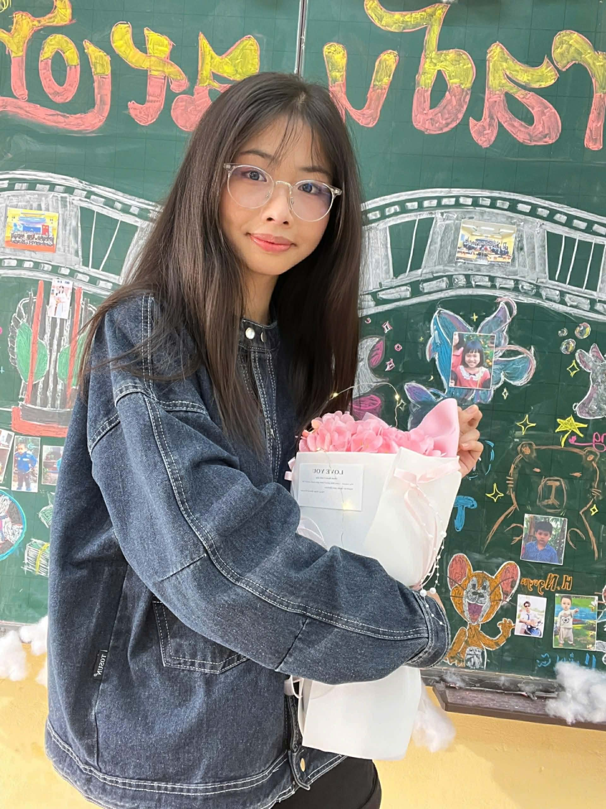

Ban Thiết kế – Truyền thông của Đội Nghệ thuật là bộ phận phụ trách hình ảnh, truyền thông và quảng bá các hoạt động của đội. Ban này giúp các chương trình nghệ thuật được giới thiệu rộng rãi và tạo ấn tượng tốt với mọi người.

🔸 Trưởng ban thiết kế truyền thông: Nguyễn Thị Hồng Nhung